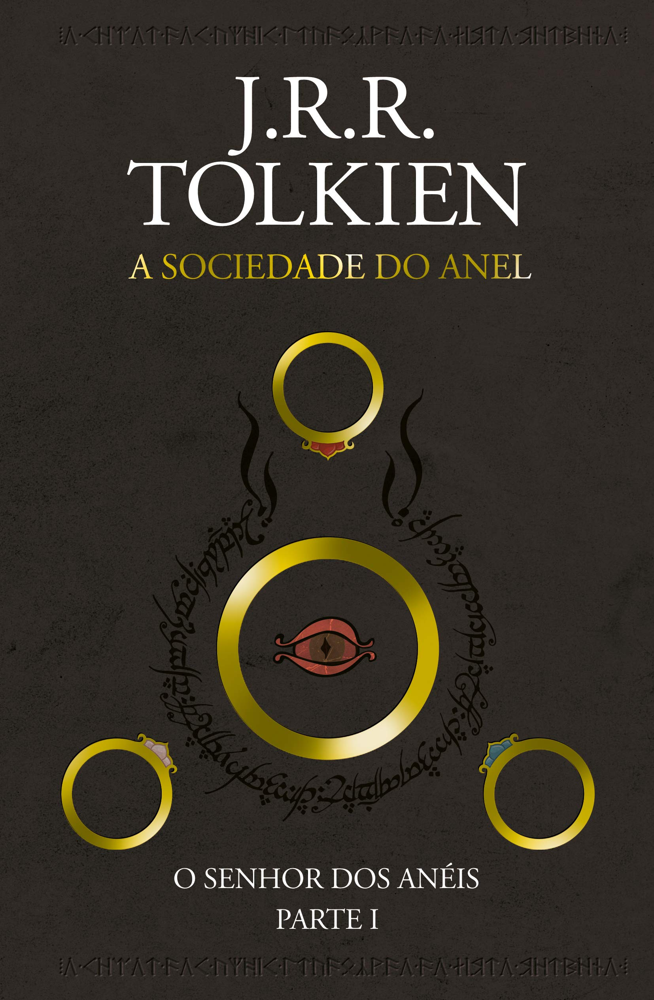

Estante de Livros
Sua biblioteca a um clique de distancia
Harry Potter

Sinopse
Harry Potter nunca tinha ouvido falar em Hogwarts até o momento em que as CARTAS começam a aparecer
no capacho do número 4 da rua dos Alfeneiros.
Endereçadas com um LACRE PÚRPURA, elas são repidamente confiscadas por seus tios TERRÍVEIS.
E então, no décimo primeiro aniversário de Harry, um homem GIGANTESCO com olhos luzindo como besouros negros chamado RÚBEO HAGRID
entra intempestivamente com uma notícia ASSOMBROSA: Harry Potter é um bruxo e tem uma vaga na ESCOLA DE MAGIA E BRUXARIA DE HOGWARTS.
Uma aventura inacreditável está para começar!
Fonte Google Books
| Data da primeira publicação |
Autor |
Idioma Original |
Gênero |
| 26 de junho de 1997 |
J. K. Rowling |
Inglês |
Romance, Literatura infantil, Literatura fantástica, Alta fantasia |
O Senhor dos Anéis: A Sociedade do Anel

Sinopse
A Sociedade do Anel começa no Condado , a região rural do oeste da
Terra-média onde vivem os diminutos e pacatos hobbits.
Bilbo Bolseiro, um dos raros aventureiros desse povo,
cujas peripécias foram contadas em O Hobbit ,
resolve ir embora do Condado e deixa sua considerável
herança nas mãos de seu jovem parente Frodo.
O mais importante legado de Bilbo é o anel mágico que costumava
usar para se tornar invisível. No entanto, o mago Gandalf,
companheiro de aventuras do velho hobbit, revela a Frodo que
o objeto é o Um Anel, a raiz do poder demoníaco de Sauron,
o Senhor Sombrio, que deseja escravizar todos os povos da
Terra-média. A única maneira de eliminar a ameaça de Sauron
é destruir o Um Anel nas entranhas da própria montanha de
fogo onde foi forjado. A revelação faz com que Frodo e seus
companheiros hobbits Sam, Merry e Pippin deixem a segurança
do Condado e iniciem uma perigosa jornada rumo ao leste.
Ao lado de representantes dos outros Povos Livres que
resistem ao Senhor Sombrio, eles formam a Sociedade do Anel.
Alguém uma vez disse que o mundo dos leitores de língua inglesa se divide entre os que já leram O Senhor dos Anéis e os
que um dia lerão o livro. Com esta nova tradução da obra, o fascínio dessa aventura atemporal ficará ainda mais evidente
para os leitores brasileiros,
tanto os que já conhecem a saga como os que estão prestes a descobrir seu encanto.
Fonte Google Books
| Data da primeira publicação |
Autor |
Idioma Original |
Gênero |
| julho de 1954 |
J.R.R. Tolkien |
Literatura fantástica |
Percy Jackson e o Ladrão de Raios

Sinopse
Primeiro volume da saga Percy Jackson e os olimpianos, O ladrão de raios esteve entre os primeiros lugares na lista das
séries mais vendidas do The New York Times. O autor conjuga lendas da mitologia grega com aventuras no século XXI.
Nelas, os deuses do Olimpo continuam vivos, ainda se apaixonam por mortais e geram filhos metade deuses, metade humanos,
como os heróis da Grécia antiga. Marcados pelo destino, eles dificilmente passam da adolescência. Poucos conseguem
descobrir sua identidade.O garoto-problema Percy Jackson é um deles . Tem experiências estranhas em que deuses e
monstros mitológicos parecem saltar das páginas dos livros direto para a sua vida. Pior que isso: algumas dessas
criaturas estão bastante irritadas. Um artefato precioso foi roubado do Monte Olimpo e Percy é o principal suspeito.
Para restaurar a paz, ele e seus amigos – jovens heróis modernos – terão de fazer mais do que capturar o verdadeiro
ladrão: precisam elucidar uma traição mais ameaçadora que fúria dos deuses.
Fonte Google Books
| Data da primeira publicação |
Autor |
Idioma Original |
Gênero |
| 15 de dezembro de 2011 |
Rick Riordan |
Inglês |
Mitologia grega, Romance, Ficção juvenil, Literatura fantástica, Alta fantasia |
Alice no País das Maravilhas

Sinopse
'Você poderia me dizer, por favor, qual caminho eu devo seguir a partir daqui?'
Que esta pergunta seja feita por uma garotinha perdida de casa (após ter seguido um coelho falante até sua toca) a uma
espécie de gato fantasmagórico flutuante já não causa nenhuma estranheza quando chegamos na tal parte da história, pois
como nos alertou a própria menina: 'há tanta coisa estranha acontecendo aqui que eu já não me surpreendo com mais nada'.
Com este conto surreal e fantástico, muitas vezes sem sentido algum, noutras vezes carregado de sentido oculto e
profundo, Lewis Carroll revolucionou para sempre a literatura infantil, praticamente a refundando (não surpreende que
encontremos algo do seu estilo em Antoine de Saint-Exupéry e Monteiro Lobato). É aqui que conheceremos célebres
personagens como o Coelho Branco, o Chapeleiro Louco e o Gato de Cheshire. É aqui que veremos, quem sabe, a primeira
descrição genuína dos sonhos infantis. É aqui que celebraremos toda a magia da boa literatura - esta que não morre
nunca.
Fonte Google Books
| Data da primeira publicação |
Autor |
Idioma Original |
Gênero |
| 22 de agosto de 2022 |
Lewis Carroll |
Inglês |
Literatura infantil, Literatura fantástica, Ficção Absurdista, Fantástico |
O guia do mochileiro das galáxias

Sinopse
Considerado um dos maiores clássicos da literatura de ficção científica, O Guia do Mochileiro das Galáxias vem
encantando gerações de leitores ao redor do mundo com seu humor afiado.
Este é o primeiro título da famosa série escrita por Douglas Adams, que conta as aventuras espaciais do inglês Arthur
Dent e de seu amigo Ford Prefect.
A dupla escapa da destruição da Terra pegando carona numa nave alienígena, graças aos conhecimentos de Prefect,um E.T.
que vivia disfarçado de ator desempregado enquanto fazia pesquisa de campo para a nova edição do Guia do Mochileiro das
Galáxias, o melhor guia de viagens interplanetário.
Mestre da sátira, Douglas Adams cria personagens inesquecíveis e situações mirabolantes para debochar da burocracia, dos
políticos, da "alta cultura" e de diversas instituições atuais. Seu livro, que trata em última instância da busca do
sentido da vida, não só diverte como também faz pensar.
Fonte Google Books
| Data da primeira publicação |
Autor |
Idioma Original |
Gênero |
| 9 de novembro de 2010 |
Douglas Adams |
Inglês |
Ficção científica, Romance, Humor, Ficção científica cômica, Ficção humorística |